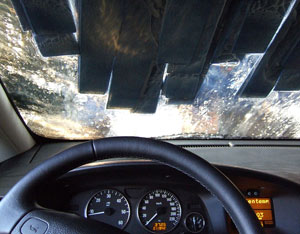

Taking your car to the local car wash instead of washing it at home might seem like a guilty pleasure, but from an environmental perspective, it is often the better choice.
When you wash your car in the driveway or street, contaminants such as grease and brake dust (as well as the car washing detergent itself) flow into storm sewers, which discharge directly into our waterways. Car washes, on the other hand, are required to drain their water into sanitary sewers (which direct sewage to treatment facilities), or to filter and reuse it on-site.
Water efficiency is also a benefit of many commercial car washes. An analysis by the Maryland Department of the Environment found that car washes use approximately 50 to 75 gallons of water per car (assuming the water is not being recycled). Using the self-service bay consumes only 15 gallons. A typical garden hose, on the other hand, has an average flow rate of 7 gallons per minute, and would thus exceed a car wash’s water consumption after two minutes compared with the self-service bay, or seven minutes compared with the automated wash if the hose were left running.
If you don’t live near a car wash, here are some ways to clean your car in an ecological way:
|
 SQUONK11/FLICKR Car washes are required to drain their water into sanitary sewers or filter and reuse it on-site. When you wash your car in a driveway or street, contaminants from the wash flow into storm sewers, which then discharge into our waterways. |
|
|